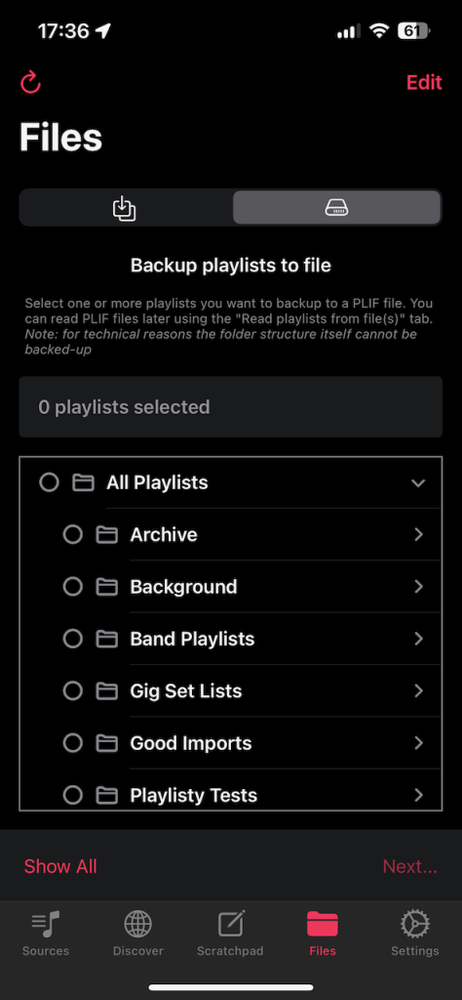
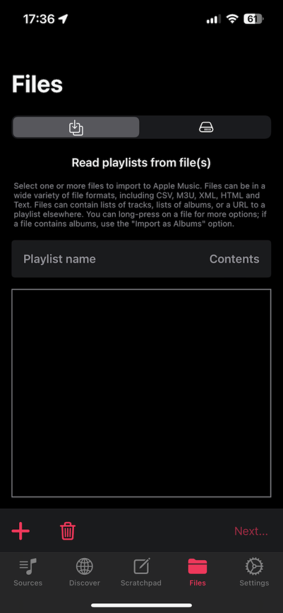

Starting with Playlisty 3.1 you can save your Apple Music playlists to a file and then restore them later using the “Files” tab.
Important: only Apple Music tracks will get backed up using this function. If your playlists contain your own local tracks they will NOT get backed up!
To backup your playlists:

- Navigate to the “Files” tab in Playlisty and then select the hard-disk icon from the picker at the top-right of that screen. You should be able to see a tree view of all of the playlists in your library.
- Select the playlists you want to back up and tap “Next…”
- Playlisty will then go through a “Reading” phase where it retrieves all available identifiers for the tracks you’ve selected. Once reading is complete, hit “Save” as you normally would. Note: it’s not worth “fixing” any tracks which have not matched at this point. All tracks will be written to your archive file – regardless of whether they matched – and if any need fixing you’ll be able to do that when you import them later.
- When the “Save to Apple Music” screen pops-up you’ll see a new “Save to a file” tab. Select this and tap “Start”.
- You’ll be prompted for a location to save the resulting file.
- That’s it! Playlisty will create a .plif (PlayList Interchange Format) file at the location you selected.
To restore your playlists:

- Navigate to the “Files” tab in Playlisty and then select the download icon from the picker at the top-left of the screen. Use the ‘+’ button to add the .plif file you created earlier. Hit “Next…”
- Once reading is complete you will have the opportunity to select the playlists you want to restore from the .plif file by checking/unchecking the “Save?” checkbox next to each. If any tracks need “fixing” you should do it here.
- Hit “Save” and save the selected playlists to your Apple Music library as you normally would.
What exactly gets backed up?
If you save one or more playlists with this function, the playlist metadata (name, description, curator1) and tracks (name, artist, album & identifiers, where available) will be written to the resulting file.
This means that if you immediately restore the playlist to an account in the same geographic region then the restored playlist should be an exact copy of the original apart from the playlist artwork (unfortunately it’s not currently possible to back this up).
If, when you come to restore the file, some of the tracks are no longer available (e.g. because they have been removed from the catalog or you have moved to a different region) Playlisty will attempt to find the best possible matches for these tracks at that time.
1Please note that curator will not correctly populated until Apple make it available in a future release
What are PlayList Interchange Format (PLIF) files?
PLIF files are open standard files containing a definition of your playlists in JSON data interchange format. Each file can contain any number of playlists and there are a multitude of tools (other than Playlisty) which you can use to explore and extract data from them, should you wish.
To get you started we’ve published a script written in the Python language which will extract all playlists from a PLIF file and write each to a separate CSV file which you can open in a tool such as Excel. The script can be found here: https://github.com/playlisty/extract_playlists.